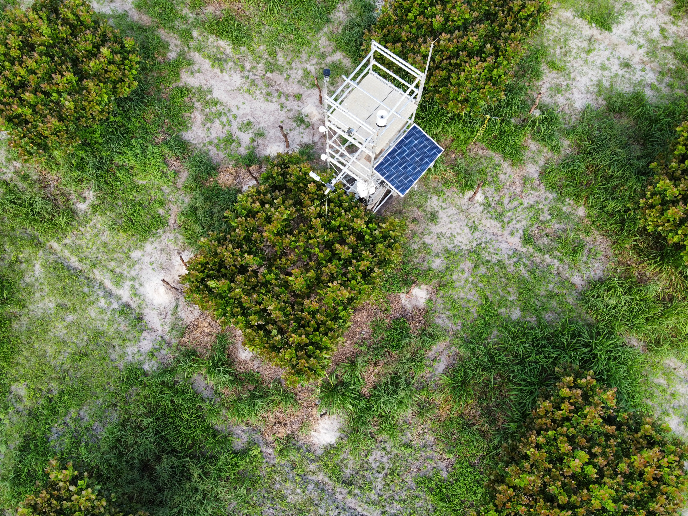
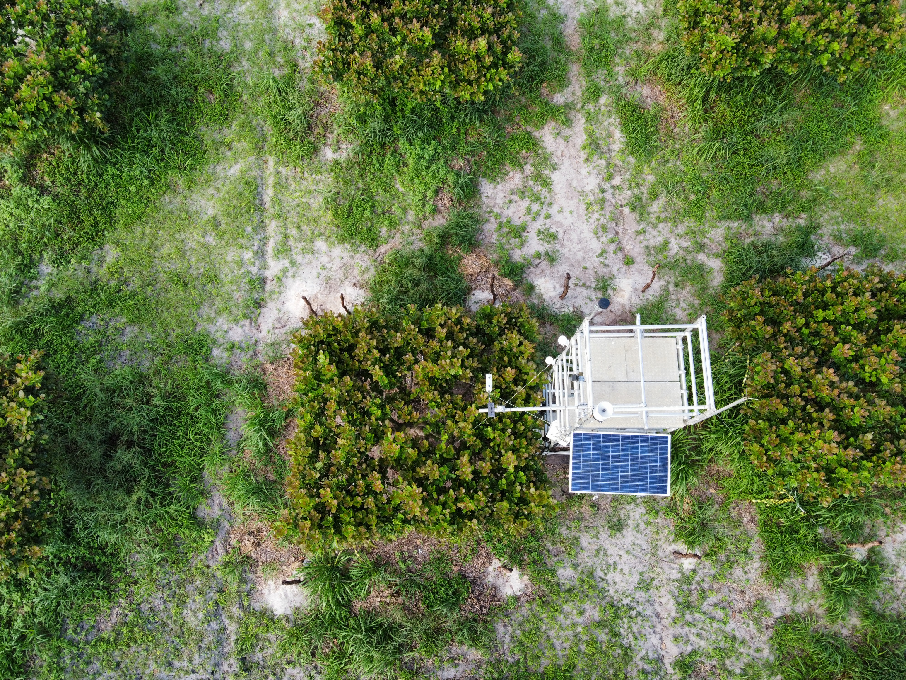

Do campo ao modelo científico
A metodologia do CajuCarbo integra medições diretas em campo, análises laboratoriais e sensoriamento remoto para compreender as trocas de carbono e água em sistemas de produção de caju.
Seis etapas integradas
Passe o mouse ou toque em cada etapa para ver mais detalhes.
Instalação em campo
Estruturas e sensores em pomar comercial.
Coleta de dados
Registro contínuo de variáveis ambientais.
Análise laboratorial
Processamento das amostras.
Sensoriamento remoto
Drones e imagens de satélite.
Modelagem
Desenvolvimento de modelos.
Análise dos resultados
Interpretação e síntese.

Torre micrometeorológica
Torre micrometeorológica instalada em pomar comercial de caju no Estado do Ceará para registrar variáveis meteorológicas e ambientais e fluxos relacionados às trocas de energia, carbono e água.
Coleta e análise de amostras
Câmaras estáticas para coleta de amostras de gases do solo e do ar para análise em laboratório de cromatografia gasosa e quantificação das emissões de gases do efeito estufa associadas ao sistema de produção de caju.

Da imagem à estimativa de carbono
Imagens de satélite e de drone utilizadas para determinação de índices de vegetação e desenvolvimento de modelos para estimativa da biomassa vegetal acima do solo e das trocas líquidas de dióxido de carbono no cultivo de caju.
Produção, água, carbono e eficiência
A relação entre a produção e o uso de recursos naturais é avaliada de forma integrada. Os indicadores abaixo serão preenchidos conforme os dados forem coletados.
Uso da água
Dados em fase de coleta
Uso do carbono
Dados em fase de coleta
Produtividade
Dados em fase de coleta
Eficiência
Dados em fase de coleta